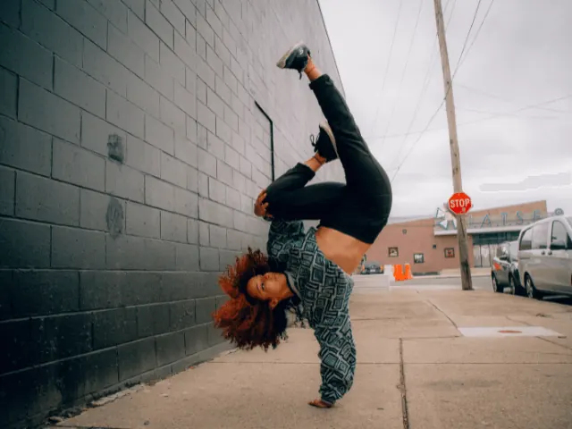
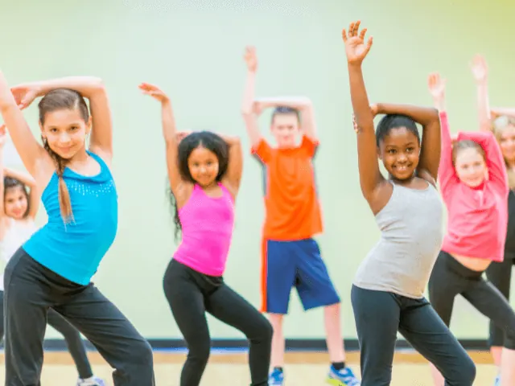
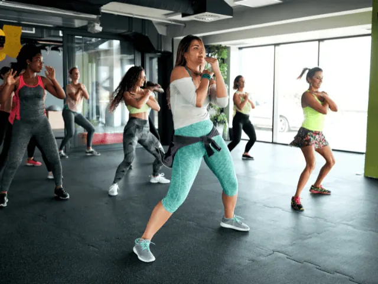
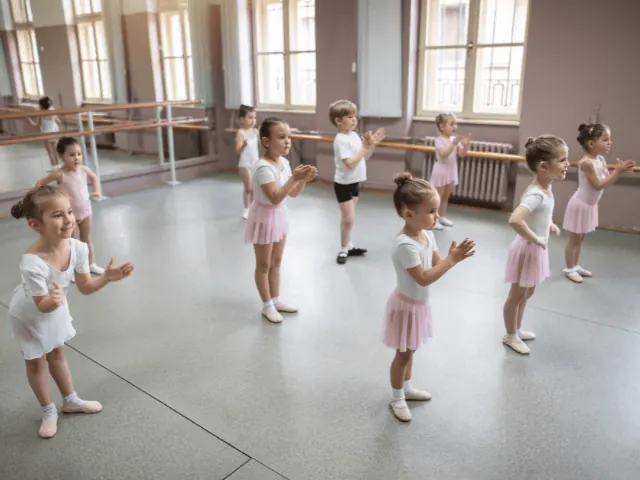

De beste dansscholen in Nijmegen
Gepubliceerd op 7 december 2022, bijgewerkt op 20 februari 2024
Onderdeel van de gids Cursussen in Nijmegen

We schreven eerder al dat dansen weer helemaalhip en happening is. Dansen is daarnaast ook nog eens hartstikke gezond. Uit onderzoek eenonderzoek van de World Health Organization blijkt dat het helpt om ziektes en aandoeningen te voorkomen en dat het je algemene welzijn verbeterd. Hoe geweldig is dat? Nog een aantal leuke bevindingen uit het onderzoek naar de gezondheidsvoordelen van dansen, zijn:
- Dansen helpt Parkinsonpatiënten om de symptomen te verminderen. Het bevordert namelijk de balans, geheugen, coördinatie, gemoedstoestand en het zelfvertrouwen.
- Dansen bevordert de sociale band tussen mensen.
- Dansen helpt bij de ontwikkeling van kinderen. Het bevordert de communicatieve vaardigheden en zorgt dat zij beter presteren op school.
- Dansen werkt beter tegen gewichtsverlies dan de meeste andere sporten.
- Dansen verbeterd je geheugen, balans en concentratie. Het bewegen op muziek heeft een enorm positief effect op je hersenen.
- Dansen vermindert gevoelens van angst en depressie. Ook helpt het mensen die kampen met PTSS om te leren omgaan met hun stress.
- Dansen bevordert onder andere de lenigheid, kracht, conditie en lichaamshouding.
Oftewel van jong tot oud, dansen is goed voor iedereen. Je wordt er ook nog eens hartstikke happy van. Van Latin tot Streetdance en van Zumba tot Tapdance, er is altijd wel iets te vinden wat bij jou past. Enthousiast geworden? Check dan deze lijst met goede dansscholen in de omgeving van Nijmegen.

Danscentrum Vermeulen
Danscentrum Vermeulen is al 52 jaar een begrip in Nijmegen. Ze bieden verschillende dansstijlen aan, namelijk:
- Zumba
- Tapdance
- Stijldansen
- Streetdance
Daarnaast bieden ze speciale kleuter-funk lessen aan voor kinderen van 4 en 5 jaar. Op donderdag- en vrijdagavond bieden ze beginnerslessen aan. Zo kun jij kijken of het bij je past.
Wil je graag met vrienden/collega’s een leuk uitje doen. Volg dan een dansworkshop. Hierbij zijn verschillende thema’s mogelijk, zoals “Geschiedenis van de dans”, “Boda Mexicana”, “Kirtag in Wien”, “The Roaring Twenties”, “Rock and Roll”, “Lindy Hop”, “Sevillanas” en “Latin Hustle”.
Nieuwsgierig geworden? Neem dan snel een kijkje op hun site:
Ga naar de website
Dansschool Confidans Nijmegen
Bij dansschool Confidans vind je een verbindende plek, waar je kunt samenkomen en je verhalen kunt delen door middel van dans. Ze streven om een unieke danservaring te bieden, waarbij de focus ligt op creativiteit en eigen dansroutines te creëren. Kwaliteit en plezier staat voorop. Dansstijlen die ze aanbieden zijn:
- Peuterdans
- Kleuterdans
- Zumba
- Urban dance
Wist je trouwens dat je bij Confidans ook terecht kan voor kinderfeestjes? Hoe leuk is dat!

MaxStudios
MaxStudios is een van de grootste en meest veelzijdige dansscholen van Arnhem en Nijmegen. Dansstijlen die zij aanbieden zijn:
- Hiphop
- Breakdance
- Modern Jazz
- Heels Class
- Dancehall
- Afrodance
- Kidsdance
- Peuterdans
- Tiktok dance class
- K-pop
- En nog veel meer.
De professionals van MaxStudios geven graag hun ervaring en passie aan jou door. Via hun website is het mogelijk om je in te schrijven voor een proefles.
Ze hebben tevens een eigen Youtubekanaal genaamd MaxStudiosTV waarop ze super gave filmpjes delen en je kunt zien wat er allemaal te leren valt.
GA NAAR DE WEBSITE
ID Dance
ID Dance is een dansschool met een team van 14 gedisciplineerde en enthousiaste docenten. Zij verzorgen al meer dan 15 jaar lessen voor alle leeftijden in Nijmegen en Lent. Dansstijlen die zij aanbieden zijn:
- Funky jazz
- Klassiek (voor kids en volwassenen)
- Modern
- Hiphop
- Breakdance
- Spitzen
- Zumba
- Jazz
- Urban contemporary
- Peuter-/kinderdans
Daarnaast bieden ze yoga aan en bodymix. Bodymix is een high-impact sportcombinatie, waarbij gebruik wordt gemaakt van springtouwen, dynabands steps en/of gewichten. Voor een gratis proefles, kun je terecht op de site van ID Dance Nijmegen
Versteegh
Bij dansschool Versteegh vinden ze lekker bewegen, persoonlijk contact, goed leren dansen en bovenal plezier in wat je doet erg belangrijk. Ze hebben passie voor hun vak en willen jou met alle liefde leren dansen. Ook bij Versteegh hebben ze een breed aanbod aan dansvormen, namelijk:
- Ballroom, Latin en stijldansen
- Hiphop, Streetdance en Breakdance
- Modern, Jazz, Tap en Ballet
- Verschillende soorten dansen voor kids.
Daarnaast organiseren zij workshops, cursussen en dansavonden. Lijkt je dit leuk? Bekijk dan even hun website.
Dus zoals je ziet valt er genoeg te kiezen in Nijmegen. Welke dans je ook leuk lijkt, voor ieder is wat wils. Hopelijk zien we jou snel je heupjes losgooien.